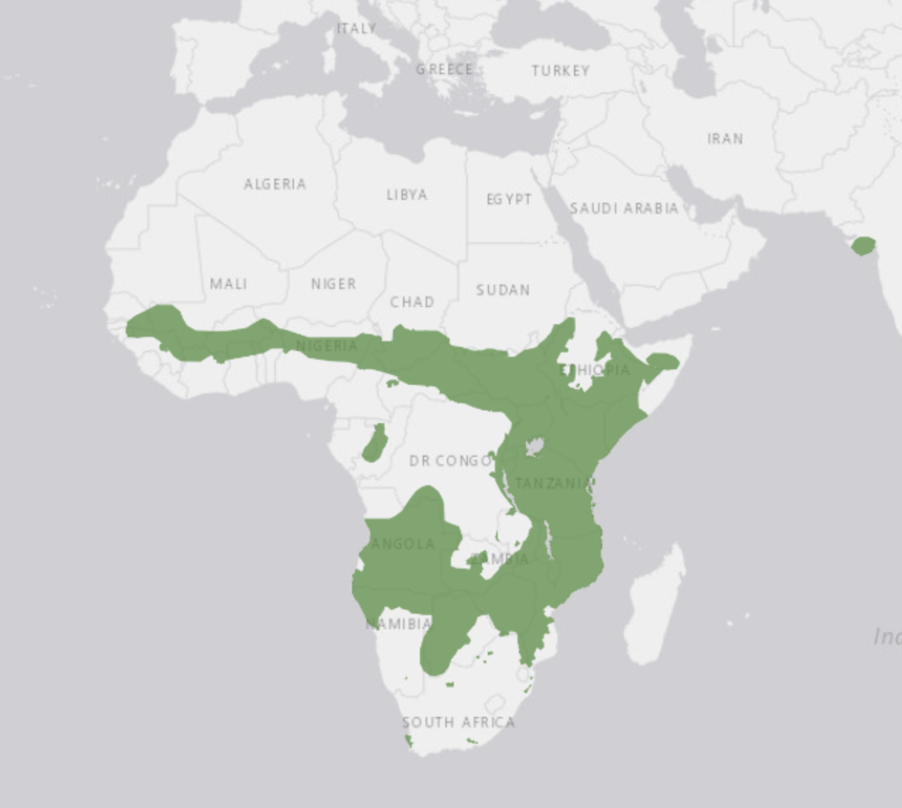

Lion
This is the area where Lions are found!

Most commonly known as the African Lion, the Lion is most found below the Sahara Desert in Africa.
The groups that lions live in are called prides. Within these prides involve up to 4 males and a dozen females along with their cubs. In these prides, they hunt for large hoofed animals to eat amongst themselves.
Fun fact! Lions are the only cats that live in groups.